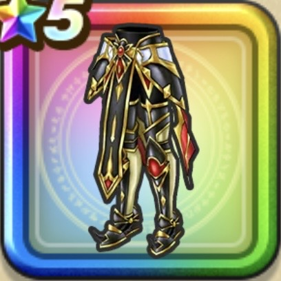

ガイアのかぶと
攻略班 7.0点 / 物質系への耐性+5%ドラゴン系への耐性+5%物質系への耐性+5%ジバリア属性ダメージ+5%
くわしい特徴
【レベル別習得スキル】 Lv1物質系への耐性+5% Lv8さいだいMP+5 Lv10ドラゴン系への耐性+5% Lv15ジバリア属性ダメージ+5% Lv18物質系への耐性+5% Lv20【魔法戦士】こうげき魔力+5 Lv20【バトマス】守備力+5 Lv23さいだいMP+5 Lv25こうげき魔力+5 【限界突破スキル】 1凸マシン系への耐性+5% 2凸守備力+5 3凸守備力+7 4凸さいだいHP+5